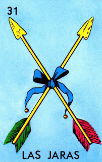

"Con su afinada melodía, las jaras encantan al oído."

"The Jaras card in Lotería represents music, tradition, and the cultural richness of Mexico. Depicted as a set of musical bows or instruments, las jaras are often associated with folk music, especially in rural areas. These instruments are used to create beautiful melodies that bring people together during celebrations and festivals, symbolizing the importance of music in Mexican culture."
Regresar